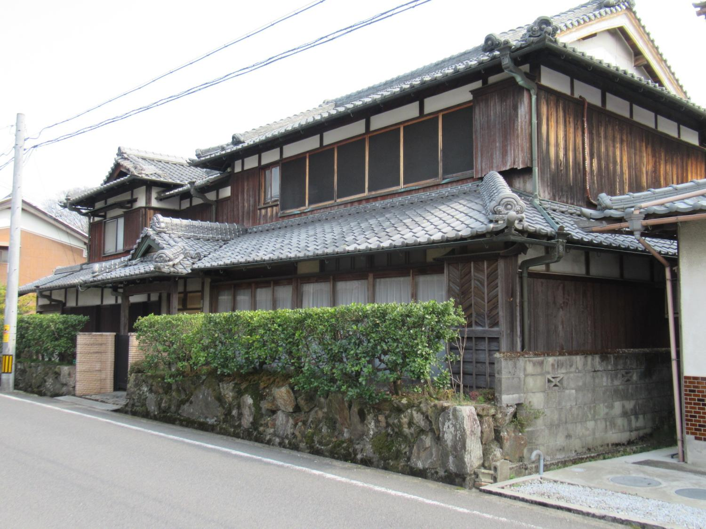
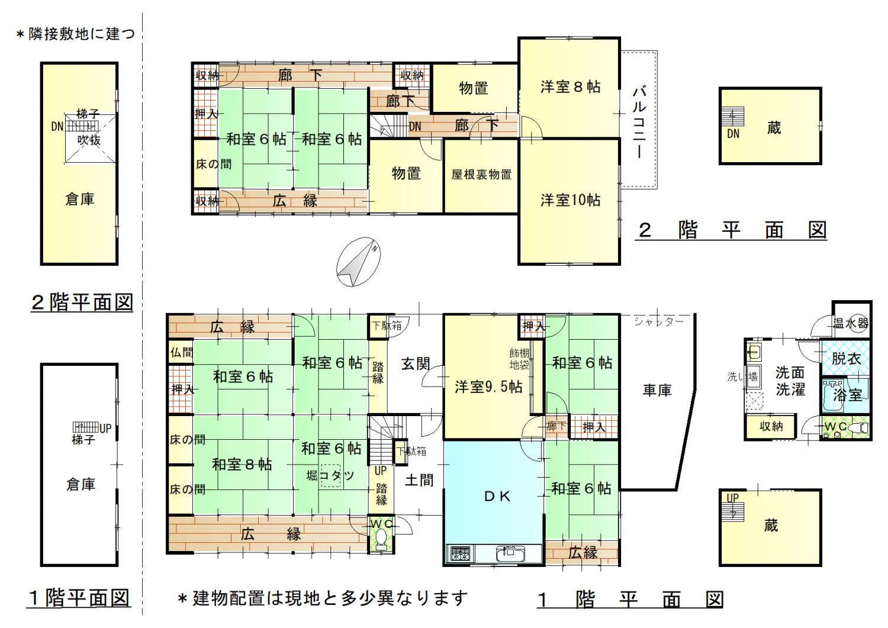
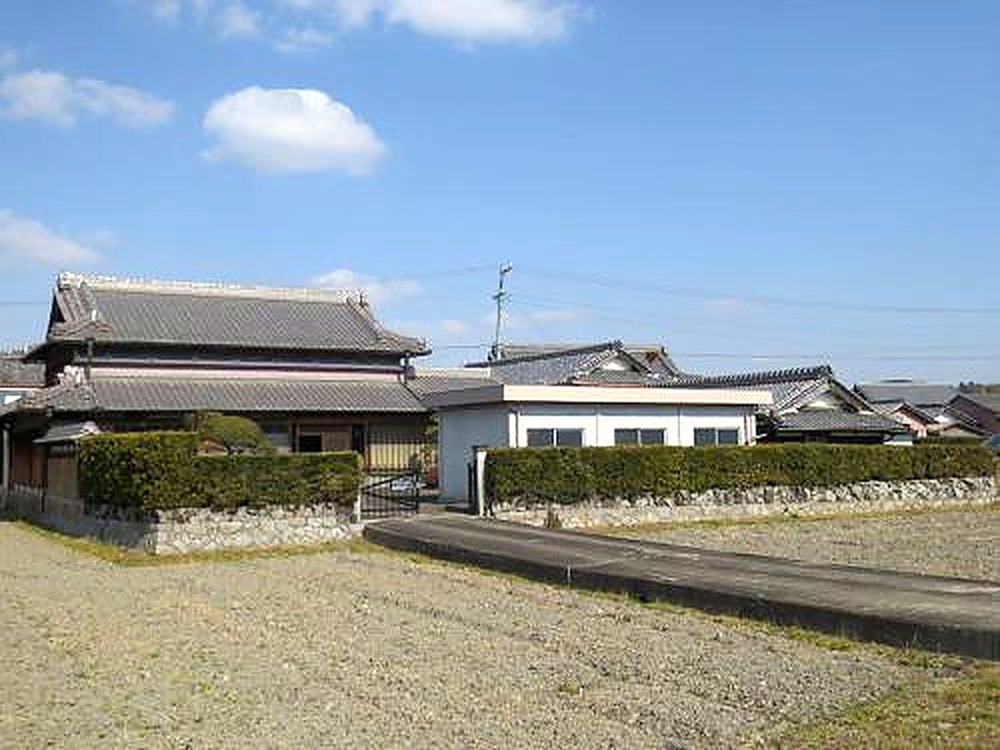
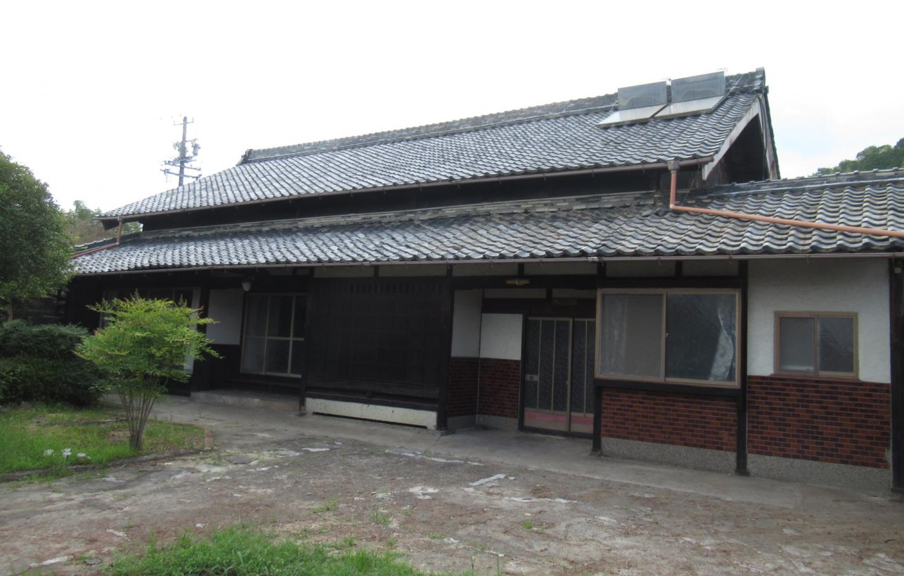
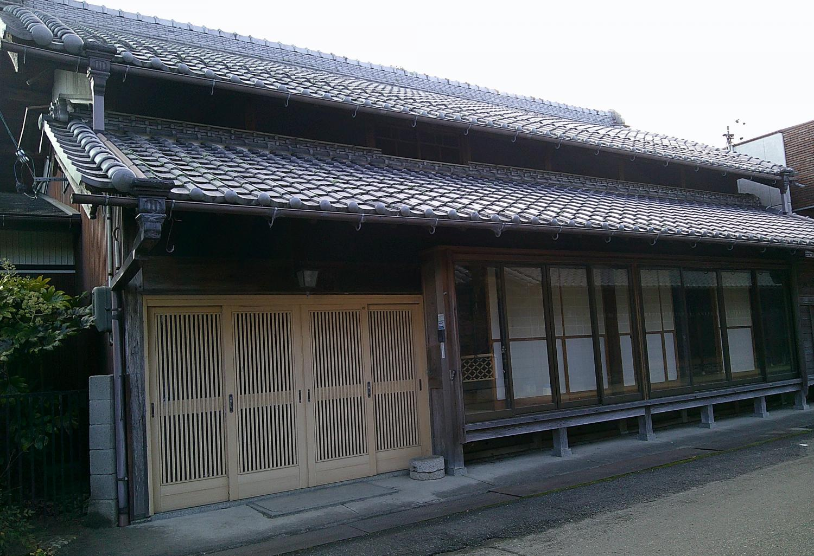

Rural farmland · Saimyōji, Iga
Spacious 1965 kominka with an adjoining 274 m² field
¥12,000,000≈ €67,800

Condition
Some repairs needed (mainly the shower tap) · Separate storehouse worn
From the Iga City Akiya Bank survey. We translate the full inspection notes on request.
Key facts
- Location
- Saimyōji, Iga, Mie 伊賀市西明寺
- Area
- Rural farmland 農村部エリア
- Layout
- 11DK
- Structure
- Wooden, two storeys
- Built
- 1965
- Land
- 432.64 m²
- Floor area
- 313.60 m²
- Water
- Mains water
- Drainage
- Septic tank (combined)
- Toilet
- Flush
- Bath
- Electric
- Gas
- Propane
- Access
- Iga Railway, Uenoshi Station 2.1 km · Saimyōji bus stop 0.4 km
- Schools
- Elementary 0.4 km · Junior high 2.7 km
- Shops
- Supermarket 1.4 km · Convenience store 0.7 km
- Other
- Parking for 2 (one small car) · Adjoining field 274 m² · Rental at ¥65,000/month also negotiable · The price in the YouTube video is out of date
360° virtual tour
Walk through the houseLook around every room in 360°, from your own sofa. Opens the Iga City virtual tour in a new tab ↗Video tour
Floor plan

Location
The exact address is shared after registration — the map shows the district.
Similar homes
-

Rural farmlandShimo-Kanbe, Iga No. 119
1981 two-storey house with kura storehouse and garage
- 10DK
- 173 m² house
- 893 m² land
¥9,800,000≈ €55,400
-

Mountain foothills360° tourŌtani, Iga No. 599
Kominka with farmland and woodland, original kamado stove — 7,331 m² of land
- 7K
- 286 m² house
- 7,332 m² land
¥7,800,000≈ €44,100
-

Rural farmland360° tourHirata, Iga No. 583
1990 two-storey main house with a single-storey annex on 1,420 m²
- 7DK
- 224 m² house
- 1,420 m² land
¥16,800,000≈ €94,900